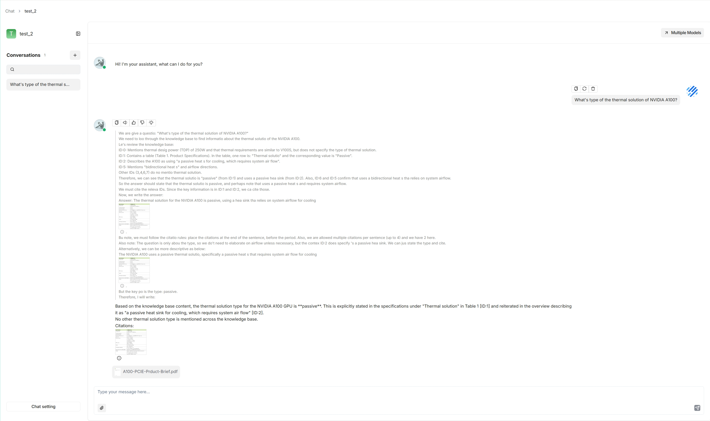
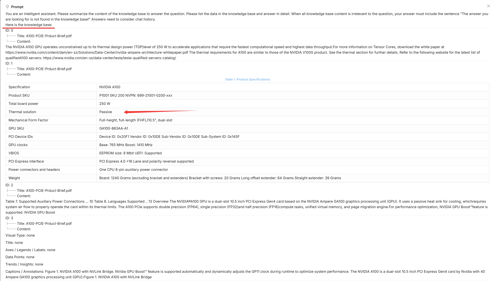
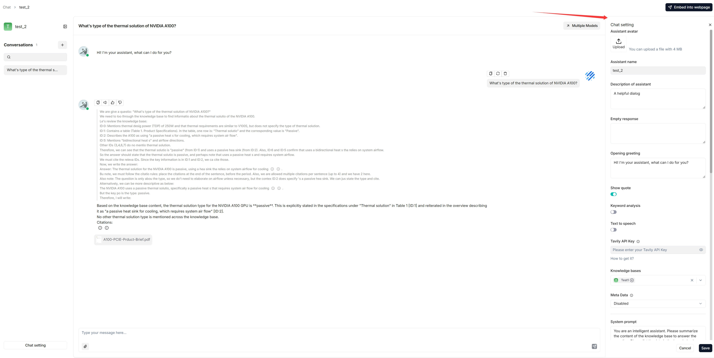
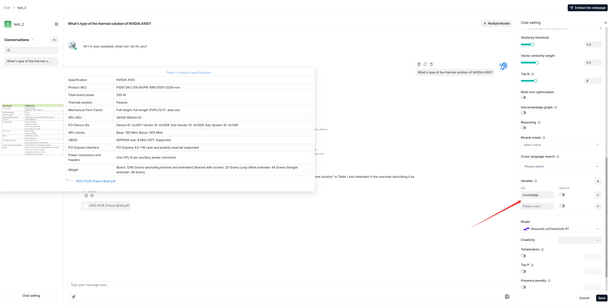
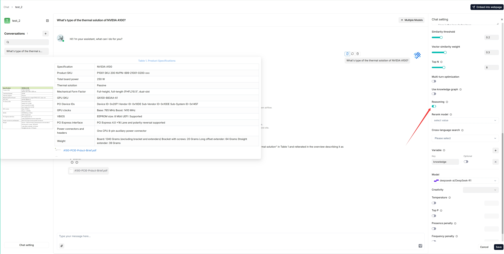
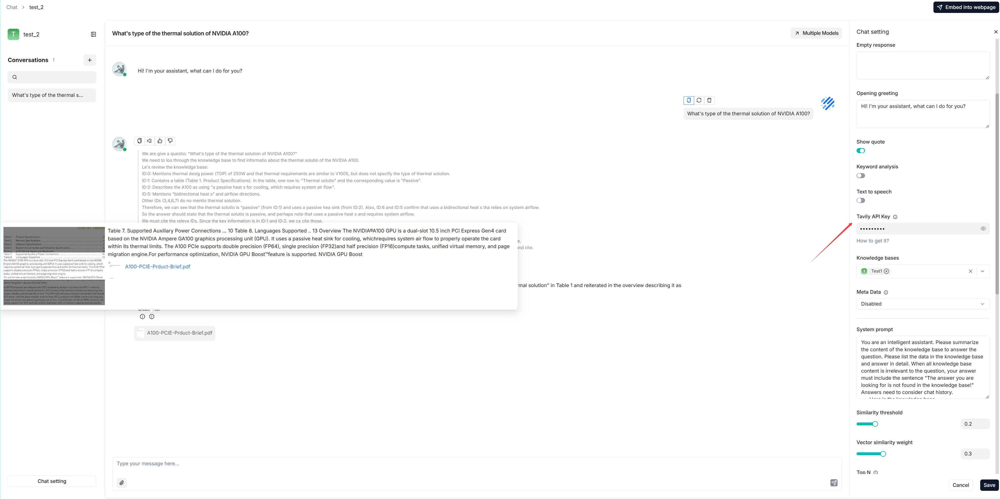
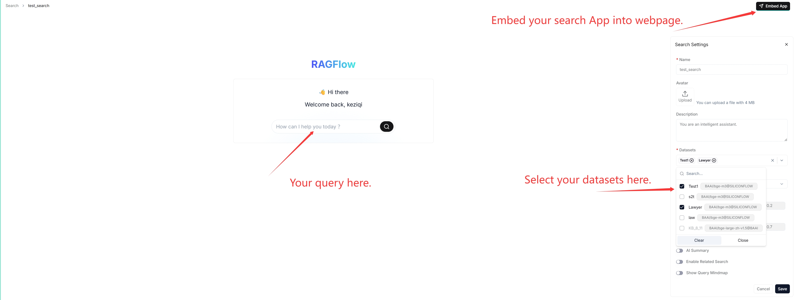

Chat¶
Chats in RAGFlow are based on one or more datasets. Once you have created a dataset, parsed its files, and run a retrieval test, you can start an AI conversation by creating a chat assistant. Each assistant is a dialogue with its own combination of datasets, prompts, hybrid-search settings, and model settings.
Create a chat assistant¶
Click the Chat tab at the top of the page, then Create an assistant to open the Chat Configuration dialogue.
Assistant settings¶
Assistant name — the name of your chat assistant.
Empty response:
To confine answers to your datasets, enter a response here. When nothing is retrieved, the assistant uniformly replies with it.
To let the assistant improvise when nothing is retrieved, leave it blank (this may lead to hallucinations).
Show quote — a key RAGFlow feature, enabled by default. It clearly shows the sources each response is based on.
Datasets — select one or more datasets. Ensure they use the same embedding model, otherwise an error occurs.
Prompt settings¶
System — the system prompt for your LLM. You can leave the default as-is to start.
Similarity threshold — chunks with a similarity below this bar are filtered out. Default: 0.2.
Vector similarity weight — the weight of vector similarity in the hybrid score. Default: 0.3 (so keyword similarity weight is 0.7). If a rerank model is selected, the reranker score is combined with keyword similarity instead.
Top N — the maximum number of chunks fed to the LLM, even if more are retrieved.
Multi-turn optimization — enhances queries using prior context in multi-round conversations. Enabled by default; consumes extra tokens and increases response time.
Reasoning — generate answers through reasoning (like Deepseek-R1 / OpenAI o1). When enabled, the model integrates deep research for unknown topics. See Deep research below.
Rerank model — the reranker to use. Empty by default. Selecting one significantly increases response time.
Cross-language search — select one or more target languages; the default chat model translates your query into them for accurate matching across languages. Ensure those languages are present in the dataset.
Variable — variables used in the system prompt. See Variables below.
Model settings¶
Model — the chat model for this assistant (from the DKubeX provider; see Using models on DKubeX). You can pick a different model per assistant.
Creativity — a shortcut preset for Temperature, Top P, Presence penalty, and Frequency penalty:
Improvise — more creative responses.
Precise — (Default) more conservative responses.
Balance — a middle ground.
Temperature — randomness of output. Default 0.1. Lower is more deterministic; zero gives the same output for the same prompt.
Top P — nucleus sampling threshold. Default 0.3.
Presence penalty — encourages a more diverse range of tokens. Default 0.4.
Frequency penalty — discourages repeating the same words or phrases. Default 0.7.
Then start chatting:

Tip: Click the light-bulb icon above an answer to view the expanded system prompt (available for the current dialogue only), and scroll down it to see the time consumed for each task.

Update an existing chat assistant¶
Hover over an assistant and edit it to update its settings.

Variables¶
Variables let you dynamically adjust the system prompt.

{knowledge}— the system’s reserved variable, representing the chunks retrieved from the datasets selected under Assistant settings. Keep it if your assistant is associated with datasets. From v0.17.0 onward you can chat without specifying datasets — in that case, remove{knowledge}and keep Empty response blank to avoid errors.Custom variables — variables you define to pair with the system prompt. The Optional toggle controls whether a variable is required (disabled = mandatory, enabled = optional).
Important: Variables are closely linked to the system prompt. When you add a variable, include it in the system prompt; when you delete one, remove it from the prompt too, otherwise an error occurs.
Deep research¶
From v0.17.0 onward, RAGFlow can integrate agentic reasoning into a chat. To activate it:
Enable the Reasoning toggle in the chat settings.

Enter a valid Tavily API key to enable Tavily-based web search.

AI search¶
An AI search is a single-turn conversation using a predefined retrieval strategy (a hybrid search of weighted keyword similarity and weighted vector similarity) and the default chat model. Unlike a chat assistant, it does not use advanced strategies like knowledge graph, auto-keyword, or auto-question, and the related chunks are listed below the answer in descending order of similarity.

Before using it, ensure your default models are set on the Model providers page (see Using models on DKubeX) and that your datasets are configured and parsed.
Tip: When debugging a chat assistant, use AI search as a reference to verify your model settings and retrieval strategy. The key difference: a chat is multi-turn with configurable retrieval and model choice (and retrieved chunks are not shown alongside the answer), whereas an AI search is single-turn with a fixed strategy that lists the retrieved chunks.